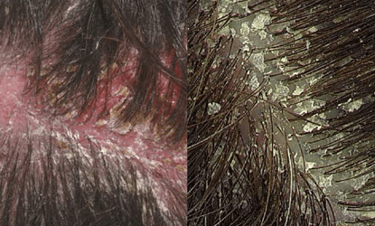
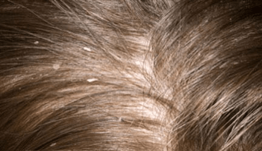

Dandruff is a common skin condition that causes white or grey flakes of skin to
appear on the scalp and in the hair.
The flakes are often noticeable if they fall from your scalp on to your shoulders.
Your scalp may also feel dry and itchy.
Dandruff isn't contagious or harmful, but it can be unpleasant and difficult
to get rid of.


Your skin constantly produces new skin cells and sheds old cells to stay healthy.
Dandruff can occur when this cycle of skin renewal speeds up.
This leads to patches of dead skin forming on the scalp that come away into the hair.
A flaky scalp can be the result of:
a common skin condition associated with an overgrowth of yeast on the skin, which can
cause the scalp, face and other areas of the body to become scaly, itchy and red;
in babies it's called cradle cap
People with seborrheic dermatitis have irritated, oily skin, and they are more
likely to have dandruff.
Seborrheic dermatitis affects many areas of the skin, including the backs of the ears,
the breastbone, eyebrows, and the sides of the nose.
The skin will be red, greasy, and covered with flaky white or yellow scales.
Seborrheic dermatitis is closely linked with Malassezia, a fungus that
normally lives on the scalp and feeds on the oils that the hair follicles secrete.
It does not usually cause a problem, but in some people it becomes overactive,
causing the scalp to become irritated and to produce extra skin cells.
As these extra skin cells die and fall off, they mix with the oil from the
hair and scalp, forming dandruff.
Combing or brushing the hair regularly reduces the risk of dandruff, because it aids in the normal shedding of skin.
a fungal infection of the scalp, also called scalp ringworm
a common skin condition that causes the skin to become dry, red, flaky and very itchy
a reaction to products used on the scalp, such as hair dye, hairspray, hair gel or mousse
a skin condition that causes red, flaky, crusty patches of skin covered with silvery scales
People who are sensitive to yeast have a slightly higher chance of dandruff, so yeast may play a part. Dandruff is often worse during the winter months and better when the weather is warmer. This may be because ultraviolet-A (UVA) light from the sun counteracts the yeast.
People with dry skin are more likely to have dandruff. Cold winter air combined with overheated rooms is a common cause of itchy, flaking skin. Dandruff that stems from dry skin tends to have smaller, non-oily flakes.
Certain hair care products can trigger a red, itchy, scaling scalp. Frequent shampooing may cause dandruff, as it can irritate the scalp. Some people say not shampooing enough can cause a buildup of oil and dead skin cells, leading to dandruff, but evidence is lacking that this is true.
Adults with Parkinson's disease and some other neurological illnesses are more
prone to dandruff and seborrheic dermatitis.
One study found that between 30 and 83 percent of people with HIV have
seborrheic dermatitis, compared with 3 to 5 percent in the general population.
Patients who are recovering from a heart attack or a stroke and those with a
weak immune system may be more prone to dandruff.
Not consuming enough foods that contain zinc, B vitamins, and some types of fats may increase the risk.
There may be a link between stress and many skin problems.
Dandruff is more likely from adolescence through middle age, although it can be lifelong. It affects men more than women, possibly for reasons related to hormones.
Shampoos and scalp products are available over the counter at most stores
and pharmacies. These can control seborrheic dermatitis, but they cannot cure it.
Before using an anti-fungal shampoo, individuals should carefully try to
remove any scaly or crusty patches on the scalp, as far as possible,
This will make the shampoo more effective.
Dandruff shampoo is available to treat dandruff in the beard.
Most anti-dandruff or anti-fungal shampoos contain at least one of the following active ingredients:
Make sure you read the instructions that come with the shampoo before using
it to check if it's suitable for you and see how often it should be applied.
A pharmacist can offer advice if you need it.
It's particularly important to leave the shampoo in your hair for at least
five minutes before washing it out.
Try these shampoos for a month to see if your dandruff improves. You might
need to try more than one type to find one that works for you.
You may be able to use the shampoo less often once your symptoms improve,
but your dandruff will probably come back if you stop using it completely.
The best strategy is to select a shampoo containing one of these ingredients
and shampoo the hair every day until the dandruff is under control.
Alternating dandruff shampoo with regular shampoo may help. A specific
shampoo may stop being as effective after some time. At this point, it
may be a good idea to switch to one with another ingredient.
Some shampoos should be left on the scalp for around 5 minutes, as rinsing
too quickly will not give the ingredient time to work. Others should be
rinsed at once. Users should follow the instructions on the container.
The very favourite of every Indian house, neem has lot many medicinal values
which almost every Indian knows. This same neem is useful for dandruff as
well due to its antibacterial and antiseptic properties. Neem not only
helps you get rid of dandruff but also helps you get relief from its symptoms
like itchiness , redness and inflammation.
You just need to follow three steps-
Lemon juice has antibacterial properties and coconut oil contains anti fungal properties, this mixture together helps you get rid of the itching scalp almost immediately and treats and hydrates the scalp skin for further.he method of use is:
Apple cider vinegar is good to maintain the PH Balance of your scalp skin, which in turn helps in reducing dandruff as dandruff is also due to algae infections sometimes. This treatment will help you get rid of algae infections and give you a healthy scalp.
Olive oil always acts as a stimulant and initial hair growth, hot virgin olive oil massages are the best natural remedies for dandruff. Hot oil massages stimulate blood circulation and help you get rid of the dryness.
One of the best home remedies to treat dandruff and hair fall is white vinegar. White vinegar has antibacterial and antifungal properties helping you keep all the scalp infections at bay.
Easiest of all remedies to get rid of dandruff is Aspirin tablets, this allopathic formula has salicylic acid which kills dandruff and maintains scalp health.
Tee tree oil is supposed to work great on yeast infections curing it and stopping the yeast growth. Adding few tea tree oil drops to your regular shampoo will help you keep the most common hair problem � Dandruff at bay.
In case you have severe dandruff problem the best and the shortest way
which you can go to regularly is rinsed off with your mouth wash.
Shampoo your hair normally, then the last rinse must be with alcohol
based mouthwash you use combined with water.
Alcohol based mouth wash helps you get rid of yeast and fungus as alcohol
kills them and once you rinse you can condition your hair usual way.
Lemon juice is acidic and helps in maintaining the PH balance of the skin, if you apply two to three tablespoons of lemon juice regularly every week on your scalp skin you will see positive results. It is further more effective if you add lemon juice drops to your last rinse too. This, along with cure adds good fresh lemony fragrance to your hair.
This remedy is best known to treat itchy scalp along with dandruff. This home remedy will help you make your hair stronger and scalp healthier.
Egg yolks are pure proteins, but they have a quality to treat dry and dull skin
too , this property helps in maintaining your scalp skin health too. Egg yolk
rehydrates skin and keeping at bay the dryness which may be the cause of your dandruff.
Two egg yolks, beat nicely and forming a smooth paste. Apply on your scalp, leave
it on for an hour and wash off. You will need to wash your hair thoroughly as the
egg stinks. So be ready for this.
These are some of the best home remedies for dandruff and treating dandruff naturally
at home, which can be tried and tested. Remember to check and identify the cause of
your dandruff too before going for any of the above remedies , this is absolutely
necessary to get the best results. Best of luck!